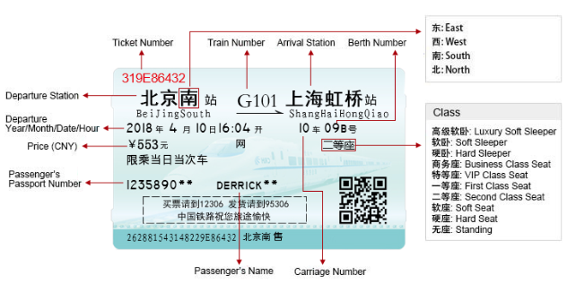
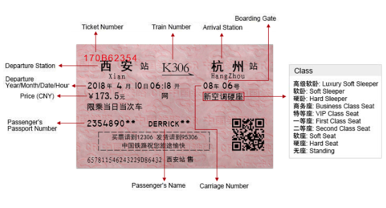

<!DOCTYPE html>
<html lang="en" dir="ltr">
  <head>
    <meta charset="utf-8" http-equiv="Content-Type" />
    <meta http-equiv="X-UA-Compatible" content="IE=edge,Chrome=1" />
    <title>Book China Train Tickets, Search China Train Price, schedule, Timetable, Help travellers take train travel in China</title>
    <meta name="viewport" content="width=device-width,initial-scale=1,minimum-scale=1,maximum-scale=1,user-scalable=no" />
    <link rel="stylesheet" href="../static/css/reset.css">
    <link rel="stylesheet" href="../static/css/common.css">
    <link rel="stylesheet" href="../static/css/train-know.css">
    <link rel="stylesheet" href="//apps.bdimg.com/libs/jqueryui/1.10.4/css/jquery-ui.min.css">
  </head>
  <body>
    <!-- 公共头部 -->
    <div class="header_">
      <div class="top-wra">
        <div class="top">
          <h1 class="title">China Train, China Train Tickets, China Train Tours!</h1>
          <div class="contact">
            <i class="contact-icon"></i>
            <a class="text">Contact Us</a>
            <span class="line">|</span>
            <i class="icon-back"></i>
          </div>
        </div>
      </div>
      <div class="nav-wra">
        <div class="nav">
          <i class="nav-icon"></i>
          <div class="list">
            <i class="home-icon"></i>
            <ul class="items">
              <li class="item active">
                <a class="link" href="../china-trains/train-search.html">China Trains</a>
              </li>
              <li class="item">
                <a class="link" href="../china-flights/">China Flights</a>
              </li>
              <li class="item">
                <a class="link" href="https://www.mychinataxi.com">China Car</a>
              </li>
              <li class="item">
                <a class="link" href="../china-train-tour/">China Tours</a>
              </li>
              <li class="item">
                <a class="link" href="diytrip/index.html">Customize China Tours</a>
              </li>
              <li class="item">
                <a class="link" href="../tibet-travel/">Tibet Train Tours</a>
              </li>
            </ul>
          </div>
        </div>
      </div>
    </div>
    <div class="header_seize_"></div>
    <!-- list -->
    <div class="howto">
        <div class="wrapper">
            <h3 class="title">About book China Train Tickets with CTT</h3>
            <div class="left">
                <div class="left-content">
                    <a href="train-know.html">How to Book Tickets</a>
                    <a href="train-qu-state.html">How to know my Booking Status</a>
                    <a href="train-qu-collect.html">How to Collect Tickets</a>
                    <a class="spe" href="train-qu-choose.html">How to Choose Train Types & Seat Classes</a>
                    <a class="active" href="train-qu-read.html">How to Read the Tickets</a>
                    <a href="">How to Take Train in China</a>
                    <a href="">How to Change Tickets</a>
                    <a href="">How to Cancel Tickets</a>
                    <a href="">Booking Q&A</a>
                </div>
            </div>
            <div class="right">
                <h4 class="right-tit">How to Read the Tickets?</h4>
                <div class="right-dt">
                    <div class="read-con">
                        There are two kinds of train tickets in China: red paper ticket and blue magnetic ticket. Blue magnetic tickets are issued by large train stations, and pink paper tickets are issued by ticket outlets or small old stations. 
                        <span></span>
                        There is no differences in price and no influence in use. The difference is that the blue tickets can be checked automatically by machines at boarding or exit gates, the pink tickets only can be checked manually.
                    </div>
                    <div class="read-image">
                        
                        
                    </div>
                    <dl class="read-list">
                        <dt>Ticket Number</dt>
                        <dd>Ticket Number is in red and located on the top left corner, consisting of letters and digits. Each ticket has its own unique number.</dd>

                        <dt>Boarding Gate</dt>
                        <dd>Boarding Gate is on the top right corner. Boarding gates in some old and small stations are not numbered, this information may not offered.</dd>
                        
                        <dt>Departure and Arrival Stations</dt>
                        <dd>
                            They are the largest characters on the ticket. The departure station is on the left and arrival station is on the right. The English letters below them are their Chinese pronunciations in pinyin.<br />
                            In China, a railway station in city center is usually named after the city, such as Beijing（北京站）. If the city has more than one station, the other station named as ‘city + direction /location, such as ‘Beijing South train station- Beijing Nan(北京南)’, Nan is South in Chinese pinyin, “Shanghai Honqiao train station”, Hongqiao is the location, “Luoyang Longmen train station”, Longmen is the location. 
                        </dd>

                        <dt>Train Number</dt>
                        <dd>Train Number is between the departure station and arrival station, made up of an English letter prefix and several digits, which refers to different train types.</dd>

                        <dt>Departure Date and Time</dt>
                        <dd>Departure Date and Time are in the fourth row on the left. The order is year/month/day/hour/minute. The passengers can enter the waiting room of train station at most 2 hours before departure. The boarding gates are opened 15-20 minutes before departure and closed 5 minutes before departure.</dd>

                        <dt>Carriage Number and Seat/Berth Number</dt>
                        <dd>Carriage Number and Seat/Berth Number are to the right of departure date and time. The order is carriage number and seat/berth number. China railway carriages are numbered with digits. In peak travel seasons like Spring Festival Travel Rush a few carriage number has a prefix ‘加(addition)’ which meaning the carriage is added. The train does not have this carriage in usual. </dd>

                        <dt></dt>
                        <dd>
                            Berths are identified by ‘digits+location’, such as 01号下铺 which is compartment No. 1 and lower berth. <br />
                            上铺(upper berth), <br />
                            中铺(middle berth)<br />
                            下铺(lower berth).<br />
                            <br />
                            <br />
                            Seat/Berth Class<br />
                            Seat/Berth Class is below the carriage and seat/berth numbers.<br />
                            高级软卧:Deluxe Soft Sleeper	<br />
                            软卧: Soft Sleeper	<br />
                            硬卧: Hard Sleeper<br />
                            商务座: Business Class Seat	<br />
                            特等座: VIP Class Seat	<br />
                            一等座: First Class Seat<br />
                            二等座: Second Class Seat	<br />
                            软座: Soft Seat	<br />
                            硬座: Hard Seat<br />
                            无座: Standing Ticket (no seat)	<br />
                        </dd>
                        <dt>Price</dt>
                        <dd>Price is on the left side of the fifth row, which is in Chinese currency.The insurance and dining on the train is not included in the ticket price. </dd>
                        <dd>Below it, the Chinese sentence says: Permission only for the specific train of the printed date and time.</dd>

                        <dt>Passenger’s ID Number and Name</dt>
                        <dd>Passenger’s ID Number and Name are in the seventh row with the passenger’s ID number on the left and name behind it. For privacy the ID number and name are part.  </dd>

                        <dt>Advertisement</dt>
                        <dd>In the left of lower part, there are two Chinese sentences in a dotted line box, advertising the passenger ticket booking (12306.cn) and freight transport service (95306.cn) of the China Railway Corporation.</dd>
                        <dt>Printing City</dt>
                        <dd>Printing City in the last row in Chinese characters, indicating in which city the ticket was printed.</dd>
                    </dl>
                </div>
            </div>
        </div>
    </div>
    <!-- 公共底部 -->
    <div class="footer_">
      <div class="foot-content">
        <ul class="info">
          <li class="item online">
            <h3 class="title">Book China Train Tickets Online</h3>
            <div class="wra">
              <i class="safe-icon"></i>
              <div class="online-desc">
                <a class="online-link" href="http://www.chinatraintickets.net/china-train-travel/train-accident-insurance.html">BEST PRICE</a>
    						<a class="online-link" href="http://www.chinatraintickets.net/china-train-travel/train-accident-insurance.html">TRAVEL SAFE</a>
    						<a class="online-link" href="http://www.chinatraintickets.net/china-train-travel/train-accident-insurance.html">MONEY BACK</a>
    						<a class="online-link" href="http://www.chinatraintickets.net/china-train-travel/train-accident-insurance.html">TRAIN MAP TIMETABLE</a>
              </div>
            </div>
          </li>
          <li class="item related">
            <h3 class="title">Related Links</h3>
            <a class="related-link" href="http://www.china-flights.cn" target="_blank">http://www.china-flights.cn</a>
						<a class="related-link" href="http://www.chinapleasuretour.com" target="_blank">http://www.chinapleasuretour.com</a>
						<a class="related-link" href="http://www.cina-viaggio.com" target="_blank">http://www.cina-viaggio.com</a>
						<a class="related-link" href="http://www.chinatraintickets.net/shangri-la-oriental-express/">Shangri-La Express</a>
            <a class="related-link" href="http://www.chinatraintickets.net/international-train/">International Train</a>
          </li>
          <li class="item trip">
            <i class="trip-icon"></i>
            <a class="trip-link" target="_blank" href="https://www.tripadvisor.com/Travel-g294211-c148494/China:How.To.Travel.By.Train.In.China.html">How train travel works in China </a>
            <h4 class="trip-title">Trains - Siberian Train Tickets</h4>
            <a class="trip-link2" href="http://www.chinatraintickets.net/trans-siberian-train/beijing-moscow.html">Beijing to Moscow;</a>
						<a class="trip-link2" href="http://www.chinatraintickets.net/trans-siberian-train/beijing-ulan-bator-K23.html">Beijing to Ulaanbaatar;</a>
            <h4 class="trip-title">Luggage Service</h4>
            <a class="trip-link2" href="http://www.chinatraintickets.net/Luggage/index.html">China Train Station Luggage Services </a>
						<a class="trip-link2" href="http://www.chinatraintickets.net/station-transfer/">China Train Station Transfer Service</a>
          </li>
        </ul>
        <div class="hot-city">
          <a href="http://www.chinatraintickets.net/china-train-travel/"> China Train Travel </a><label>|</label>
					<a href="http://www.chinatraintickets.net/china-trains/beijing.html"> Beijing Train Tickets </a><label>|</label>
					<a href="http://www.chinatraintickets.net/china-trains/shanghai.html"> Shanghai Train Tickets </a><label>|</label>
					<a href="http://www.chinatraintickets.net/china-trains/xian.html"> Xian Train Tickets </a><label>|</label>
					<a href="http://www.chinatraintickets.net/china-trains/guilin.html"> Guilin Train Tickets </a><label>|</label>
					<a href="http://www.chinatraintickets.net/china-trains/hongkong.html"> Hong Kong Train Tickets </a><label>|</label><br />
					<a href="http://www.chinatraintickets.net/china-trains/hangzhou.html"> Hangzhou Train Tickets </a><label>|</label>
					<a href="http://www.chinatraintickets.net/china-trains/suzhou.html"> Suzhou Train Tickets </a><label>|</label>
					<a href="http://www.chinatraintickets.net/beijing-lhasa-train-ticket/index.html"> Beijing Lhasa Train Tickets </a><label>|</label>
					<a href="http://www.chinatraintickets.net/trans-siberian-train/index.html"> Trans-Siberian Train Tickets </a><label>|</label><br />
					<a href="http://www.chinatraintickets.net/trans-siberian-train/beijing-moscow.html"> Beijing Moscow Train Tickets </a><label>|</label>
					<a href="http://www.chinatraintickets.net/trans-siberian-train/beijing-ulan-bator-K23.html"> Beijing Ulaanbaatar Train Tickets </a><label>|</label>
					<a href="http://www.chinatraintickets.net/nanning-hanoi-train-ticket/index.html"> Beijing Nanning Hanoi Train Tickets </a><label>|</label>
					<a href="http://www.chinatraintickets.net/beijing-kowloon-hongkong-train/"> Beijing Kowloon Train Tickets </a><label>|</label><br />
					<a href="http://www.chinatraintickets.net/shanghai-kowloon-train-ticket/index.html"> Shanghai Kowloon Train Tickets </a>
        </div>
        <div class="pay-by">
          <a href="http://www.pata.org/" target="_blank">
						<div class="img3"></div>
					</a>
					<a href="http://cats.org.cn/" target="_blank">
						<div class="img4"></div>
					</a>
					<a href="http://www.iata.org/Pages/default.aspx" target="_blank">
						<div class="img5"></div>
					</a>
					<a href="http://www.paypal.com/" target="_blank">
						<div class="img6"></div>
					</a>
					<a href="http://www.visa.com.cn/index.shtml" target="_blank">
						<div class="img7"></div>
					</a>
					<a href="http://www.mastercard.com" target="_blank">
						<div class="img8"></div>
					</a>
					<a href="https://www.westernunion.com" target="_blank">
						<div class="img9"></div>
					</a>
        </div>
        <div class="links">
          <a href="http://www.chinatraintickets.net/index.html"> HOME </a><label>|</label>
					<a href="http://www.chinatraintickets.net/contact-us/"> CONTACT US </a><label>|</label>
					<a href="http://www.chinatraintickets.net/terms-conditions/"> TERMS AND CONDITIONS </a><label>|</label>
					<a href="http://www.chinatraintickets.net/privacy-policy.html"> PRIVACY POLICY </a><label>|</label>
					<a href="http://www.chinatraintickets.net/testimonial/"> TESTIMONIAL </a><label>|</label>
					<a href="http://www.chinatraintickets.net/china-taxi-phone.html"> China-taxi </a><label>|</label>
					<a href="http://www.chinatraintickets.net/links/"> LINKS </a><label>|</label>
					<a href="http://www.chinatraintickets.net/sitemap.html"> SITE MAP</a><label>|</label>
					<a href="http://www.chinatraintickets.net/terms_condition.html"> Terms&Conditions</a><label></label>
        </div>
        <div class="reserved">2007 - 2019 © www.ChinaTrainTickets.net  CTT. All rights reserved.</div>
      </div>
    </div>
    <!-- 联系我们 -->
    <div class="customer_">
      <a class="cus-link" href="../contact-us/">
        <div class="cus-wra">
          <i class="cus-icon"></i>
        </div>
        <i class="line"></i>
        <span class="text">Contact Us</span>
      </a>
    </div>
    <script type="text/javascript" src="//apps.bdimg.com/libs/jquery/1.10.2/jquery.min.js"></script>
    <script type="text/javascript" src="//apps.bdimg.com/libs/jqueryui/1.10.4/jquery-ui.min.js"></script>
    <script type="text/javascript" src="https://kyfw.12306.cn/otn/resources/js/framework/station_name.js?station_version=1.9046"></script>
    <script type="text/javascript" src="../static/js/lib/md5.js"></script>
    <script type="text/javascript" src="../static/js/lib/crypto-js.min.js"></script>
    <script type="text/javascript" src="../static/js/lib/sha256.min.js"></script>
    <script type="text/javascript" src="../static/js/app/common.js"></script>
  </body>
</html>
